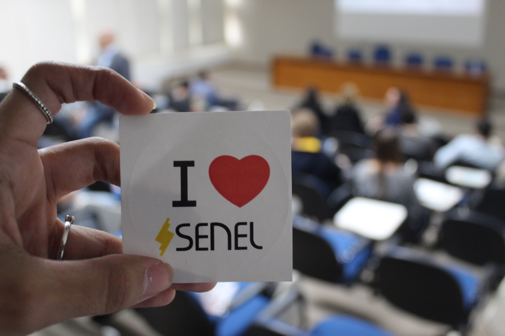
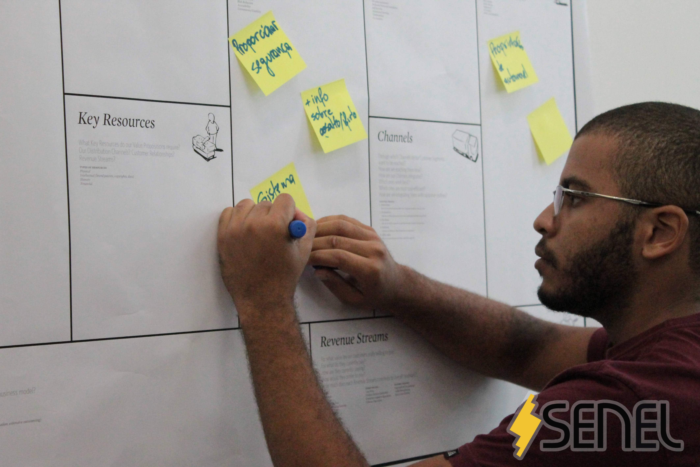

Palestras
Experiências e tendências apresentadas por especialistas.

Universidade Federal do Rio de Janeiro · desde 2018
A Semana da Engenharia Elétrica conecta estudantes, profissionais e as tecnologias que transformam o setor elétrico.
Quem somos
A SENEL UFRJ é uma equipe formada por estudantes que organiza eventos para alunos e profissionais de Engenharia Elétrica. Seu principal encontro é realizado no Centro de Tecnologia da UFRJ, com apoio do Departamento de Engenharia Elétrica.
Palestras, minicursos, mesas-redondas e workshops aproximam a formação acadêmica das tendências técnicas, profissionais e sociais do mercado.
Experiências e tendências apresentadas por especialistas.
Conhecimento aplicado em ferramentas e tecnologias.
Perspectivas diferentes em conversas que ampliam repertórios.
Atividades práticas para experimentar, criar e aprender.
Nossa trajetória
Acervo SENEL
Escolha um ano para acessar tema, indicadores, programação, registros fotográficos e parceiros daquela edição.
Sobre a edição
Em números
Trilhas do conhecimento
Programação
Galeria
Parcerias

Nossa missão
Valores que nos movem
A meta é ampliar o alcance dos eventos e manter a melhor qualidade possível de atividades e estrutura, em formatos presenciais ou online.